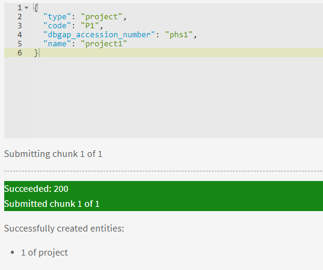
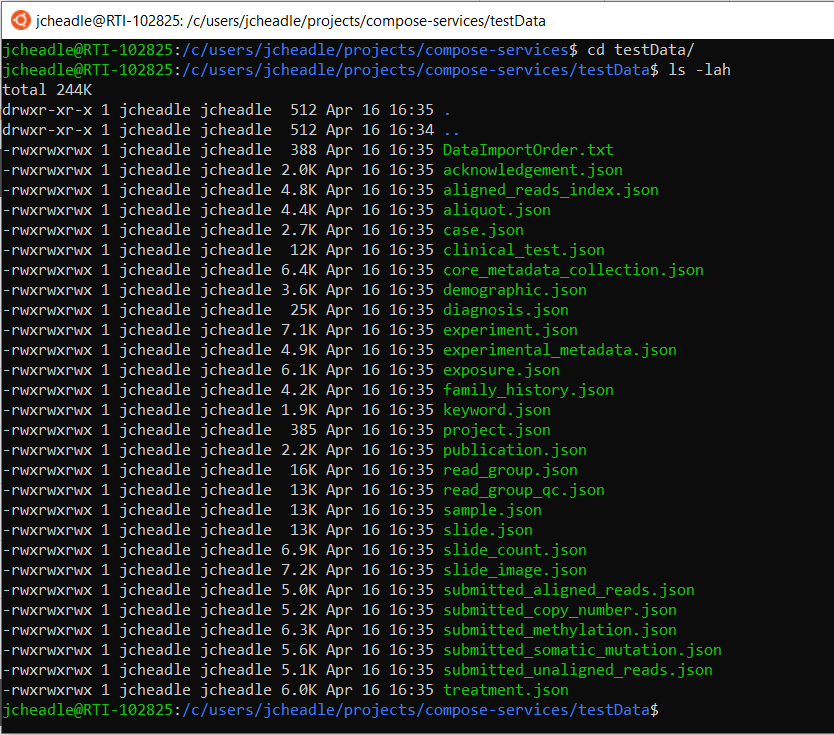
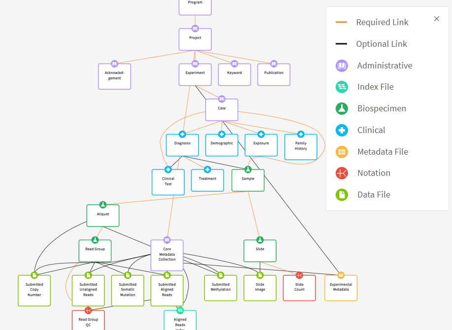
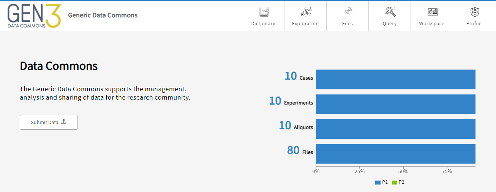
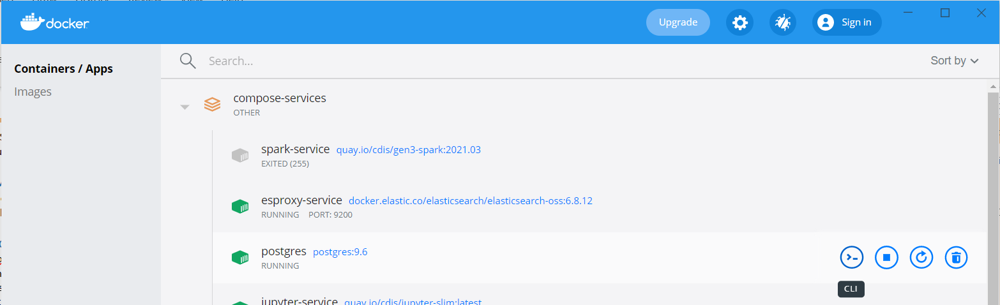
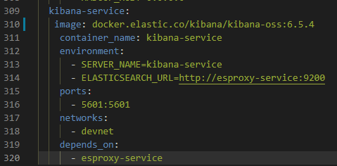
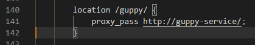
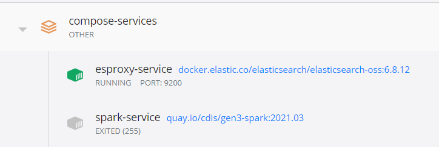

Configuring a Working Gen3 Data Commons with Test Data¶
Overview¶
This section continues to walk through the Gen3 compose-services repository, starting at the Using the Data Commons section. This section assumes that you have completed the previous section (Standing up Gen3 Locally) successfully.
Using the Data Commons¶
Spin up the Data Commons¶
If you do not have it up already, bring up the docker-compose stack by typing
docker-compose up -d at your project repo root. Wait until you can
access the data commons at https://localhost.
Smoke Test¶
The smoke test script queries the health-check endpoints of each service.
Runt he smoke test by typing bash smoke_test.sh localhost.
If any service shows a 500 response (internal server error), log into
https://localhost using your credentials, refresh the page, and try the smoke
test again. You should see 200 responses for each of the services.
{kind=link}
Granting Permissions¶
Permissions must be granted to your Admin user for any new programs or projects. Programs and projects are two required administrative nodes in the Gen3 graph model. You can see the Gen3 Graph model visualized at http://localhost/DD.
Definitions¶
- Programs: an organization, e.g. TOPMed. This is the main upstream node in the Gen3 data model.
- Projects: a study, e.g. NHLBI TOPMed: Genetics Study of Atherosclerosis Risk (GeneSTAR). This is the node just downstream of a program, but upstream of all other nodes.
For the purposes of this guide, we will use simple demo names for the programs and projects.
Permissions¶
To add data, you must first create a program and project. However, you must first grant yourself access to create see these entities. There is a specific section in the Gen3 compose-services repository that guides you through granting permissions. I will go over the highlights below.
First, you must grant the services.sheepdog-admin policy to your admin
user (the one you signed in with) in the user.yaml file.
{kind=link}
These permissions should already be set up, but in case they aren’t, make sure
the appropriate sections look like the figure above (replace the email in
groups:users: with your email). Exit out of the user.yaml file once
you are done editing it.
To update user privileges while the docker-compose stack is up, enter the following at the command line:
docker exec -it fence-service fence-create sync --arborist http://arborist-service --yaml user.yaml
This syncs the user.yaml file with the arborist service, updating user privileges.
Create a Program and a Project¶
Create a Program¶
To create a program, visit the URL to your Gen3 Data Commons (most likely https://localhost) and append ‘/_root’. It should look like the figure below.

Follow the instructions to create a program:
- Click the slider to Use Form Submission
- Select ‘program’ from the dropdown
- Type in ‘123’ in the
dbgap_accession_numberfield - Type ‘Program1’ in the
namefield
{kind=link}
Alternatively, you could upload a JSON document with these fields. Then, press the ‘Submit’ button. If the submission is successful, you can navigate to https://localhost/Program1 and see an option to upload more content.
If this does not appear to work, stop the stack and bring it up again with
docker-compose down
docker-compose up -d
Restarting the stack seems to fix many problems with the local Gen3 deployment.
Create a Project¶
At https://localhost/Program1, fill in the required fields for the project:
- code: P1
- dbgap_accession_number: phs1
- name: project1
Then press ‘Submit’. You should see a confirmation message like below:
{kind=link}
Repeat this for a Program named ‘Program2’ and a corresponding project containing the following attributes:
- code: P2
- dbgap_accession_number: phs2
- name: project2
Update Submission Permissions¶
Prior to uploading metadata, you will need to tweak your Secrets/user.yaml file so that your admin user has permission to view and submit data on the https://localhost/submissions page.
Add programs to group and/or user
To upload data to the programs you created, you must add the program names under
the policies: tag in one of your groups OR under your user. I
recommend adding it to the data_submitters group, as this likely aligns
with production processes (adding access to groups as opposed to individual users).
groups:
# can CRUD programs and projects and upload data files
- name: data_submitters
policies:
- services.sheepdog-admin
- data_upload
- MyFirstProject_submitter
- Program1
- Program2
users:
- <your_admin_email>@gmail.com
users:
<your_admin_email>@gmail.com:
tags:
name: Admin User
# email: mustbe@differentemail.com
policies:
- services.sheepdog-admin
- workspace
- data_upload
- Program1
- Program2
Add programs and projects to resources section
Your programs must be added to resources/programs as well. Follow the example for
MyFirstProgram.
resources:
- name: workspace
- name: data_file
- name: services
subresources:
- name: sheepdog
subresources:
- name: submission
subresources:
- name: program
- name: project
- name: open
- name: programs
subresources:
- name: MyFirstProgram
subresources:
- name: projects
subresources:
- name: MyFirstProject
- name: Program1
subresources:
- name: projects
subresources:
- name: P1
- name: Program2
subresources:
- name: projects
subresources:
- name: P2
Add programs to policies
Finally, under the policies tag, add the program/project information.
policies:
- id: workspace
description: be able to use workspace
resource_paths:
- /workspace
role_ids:
- workspace_user
- id: data_upload
description: upload raw data files to S3
role_ids:
- file_uploader
resource_paths:
- /data_file
...
- id: Program1
role_ids:
- reader
- creator
- updater
- deleter
- storage_reader
- storage_writer
resource_paths:
- /programs/Program1
- /programs/Program1/projects/P1
- id: Program2
role_ids:
- admin
- reader
- creator
- updater
- deleter
- storage_reader
- storage_writer
resource_paths:
- /programs/Program2
- /programs/Program2/projects/P2
You are now ready to submit test data to these projects.
Upload Test Data¶
Uploading test data helps you to get a feel for how the data dictionary, data explorer page (Windmill), and query page (Guppy) connect.
Generate Test Metadata¶
Gen3 developers use a tool to generate test data that conforms to a particular data dictionary. Currently, the default genomic data commons dictionary is active - you can check it by going to https://localhost/DD.
Run the tool at your repository root with the following commands:
export TEST_DATA_PATH="$(pwd)/testData"
mkdir -p "$TEST_DATA_PATH"
docker run -it -v "${TEST_DATA_PATH}:/mnt/data" --rm --name=dsim
--entrypoint=data-simulator quay.io/cdis/data-simulator:master simulate
--url https://s3.amazonaws.com/dictionary-artifacts/datadictionary/develop/schema.json
--path /mnt/data --program jnkns --project jenkins --max_samples 10
If this is your first time running, this will likely pull a new image to your computer. After a minute or so, you will see that test data has been generated.
{kind=link}
Below is an example of a portion of the diagnosis.json file, which shows a
list of metadata for the properties of the Diagnosis node.
{kind=link}
Edit Test Metadata¶
The test metadata generated here is for the project ‘Jenkins’, which does not match any of our project names. Thus, we must change the project name for the relevant files, which are as follows:
- acknowledgement.json
- experiment.json
- keyword.json
- publication.json
- core_metadata_collection.json
These files are all at the top of the hierarchy in the data dictionary.
To do this, you may find & replace using your preferred text editor. You can alternatively run the following command at your repo root:
find ./testData -type f -name "*.json" | xargs sed -i 's/Jenkins/P1/g'
This command finds every JSON file in the testData folder that contains ‘Jenkins’
and replaces it with ‘P1’, which has been chosen as the project name for Program1
in this guide.
Upload Test Metadata to Portal¶
Go to https://localhost/submission to begin upload of test metadata to the Data Portal UI. A general guide to this submission is located on gen3.org’s website.
Upload Order¶
{kind=link}
Metadata must be uploaded according to the hierarchy in the graph model. Otherwise,
you will get a FAILED: 400 error. For example, if ‘Slide’ metadata was
uploaded prior to uploading the ‘Sample’ metadata, an error would occur. Therefore,
make sure the nodes upstream of the node for which you want to populate metadata is uploaded first:
- Acknowledgement, Experiment, Keyword, Publication
- Case, Core Metadata Collection
- Diagnosis, Demographic, Exposure, Family History
- Clinical Test, Treatment, Sample
- Aliquot, Slide
- Read Group
- Submitted Copy Number, Submitted Unaligned Reads, Submitted Somatic Mutation, Submitted Aligned Reads, Submitted Methylation, Slide Image, Slide Count, Experimental Metadata
- Read Group QC, Aligned Reads Index
You should see the two programs and associated projects that were created in the
previous steps. Choose one of the projects - if you replaced ‘Jenkins’ with ‘P1’, used Program1-P1 -
and click the ‘Submit Data’ button next to it. Next, click the ‘Upload file’
button and upload the 27 JSON files that are contained within the ./testData repository.
This is a bit tedious but should only take a few minutes.
Verify Test Metadata Upload¶
Data Portal¶
You may need to bring the docker-compose stack down and up again to see the changes in the data portal. Afer the restart, log in and see that the data commons landing page dashboard now has a populated chart.
{kind=link}
You can also see data at, for instance, https://localhost/Program1-P1/search?node_type=sample, which shows the metadata recently uploaded to the sample node.
PostgreSQL Database¶
Per the compose-services model here, data gets passed to the Postgres database for persistence. We can verify metadata is in the PostgreSQL container by first clicking on CLI for the postgres container in Docker Compose, then entering the following commands:
{kind=link}
{kind=link}
su postgres # this changes to the postgres user
psql # this starts psql
\l # this lists databases
\c metadata_db # this connects to the e.g. metadata_db database
SELECT * FROM node_acknowledgement # This brings back data from the node_acknowledgement table
Using those commands, you shoudl see data under the node_id column. In
particular, you should see the program/project you created listed as the value
for the project_id key.
{kind=link}
Reconfigure Kibana and Guppy¶
Now that we have created a program, a project, generated test metadata, and uploaded simulated test metadata via the Data Portal UI, we can reconfigure Kibana and Guppy.
Reconfigure Kibana¶
Uncomment the kibana-service from the docker-compose.yaml file. It should look like the image below.
{kind=link}
Reconfigure Guppy¶
Reconfigure Guppy to show the exploration page facets and allow for GraphQL queries on the Query page. This sub-section follows the instructions on this page.
First, re-enable nginx.conf by removing the comments from the guppy section.
{kind=link}
Troubleshooting Spark Service¶
{kind=link}
Ignore this section if your spark service is active (green).
Upon initial start up of the docker-compose stack, the spark service may exit with code 255. The compose-services repo mentions this issue in the spark-service-hdfs-reformatting-issue section. Essentially, the solution is to remove the spark-service container and then bring the stack up again.
docker rm spark-service
docker-compose up -d
Install Dependencies¶
Once the spark-service container is active (green), install the necessary dependencies for the tube-service container and run the guppy setup from the repo root:
docker exec -it tube-service bash -c "cd /tmp/datadictionary && pip install ."
bash ./guppy_setup.sh
This should take a few minutes to run.
{kind=link}
Verify Queries Work¶
Queries are possible against two different data models - the graph model and the flat model. The graph model can be seen at https://localhost/DD, whereas the flat model is the ETL’d version of the graph model to Elasticsearch for quick retrieval.
{kind=link}
Flat Model¶
In this data commons only case and file metadata may be queried.
In addition, one can perform aggregations over these nodes. This is outside of the
scope of this guide. See an example below.
{kind=link}
Additional Query Information¶
More information on queries can be found on the GitHub repo for Guppy, specifically the Guppy Query Syntax page (https://github.com/uc-cdis/guppy/blob/master/doc/queries.md)
Closing Thoughts¶
At this point, you should have a working data commons with test data that can be explored in Data Explorer and queried with Guppy. The point of the guide up to this point is to show the inner workings of Gen3 such that it can be customized for the needs of your scientific community.
Future pages in this guide will instruct users on how to customize the look and content of their Gen3 deployment and run through a workflow of adding real data from publicly available datasets, editing the data dictionary, and performing basic analyses in Jupyter Notebooks.